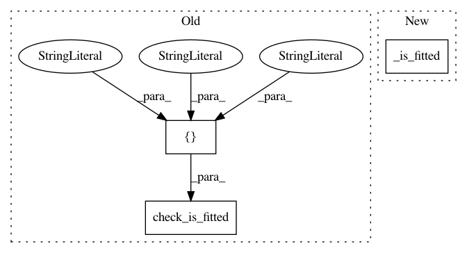

1df039f39d2a19d5cec8e93ee67854bb1b9a7489,tslearn/piecewise.py,OneD_SymbolicAggregateApproximation,transform,#OneD_SymbolicAggregateApproximation#Any#Any#,640
Before Change
numpy.ndarray of integers with shape (n_ts, n_segments, 2 * d)
1d-SAX-Transformed dataset
check_is_fitted(self, ["X_fit_dims_", "breakpoints_avg_",
"breakpoints_slope_"])
X = check_array(X, allow_nd=True, dtype=numpy.float)
X = check_dims(X, X_fit_dims=self.X_fit_dims_)
return self._transform(X, y)
After Change
numpy.ndarray of integers with shape (n_ts, n_segments, 2 * d)
1d-SAX-Transformed dataset
self._is_fitted()
X = check_array(X, allow_nd=True, dtype=numpy.float)
X = check_dims(X, X_fit_dims=self.X_fit_dims_)
return self._transform(X, y)
In pattern: SUPERPATTERN
Frequency: 3
Non-data size: 3
Instances
Project Name: rtavenar/tslearn
Commit Name: 1df039f39d2a19d5cec8e93ee67854bb1b9a7489
Time: 2020-05-28
Author: romain.tavenard@univ-rennes2.fr
File Name: tslearn/piecewise.py
Class Name: OneD_SymbolicAggregateApproximation
Method Name: transform
Project Name: rtavenar/tslearn
Commit Name: 1df039f39d2a19d5cec8e93ee67854bb1b9a7489
Time: 2020-05-28
Author: romain.tavenard@univ-rennes2.fr
File Name: tslearn/piecewise.py
Class Name: OneD_SymbolicAggregateApproximation
Method Name: inverse_transform
Project Name: rtavenar/tslearn
Commit Name: 1df039f39d2a19d5cec8e93ee67854bb1b9a7489
Time: 2020-05-28
Author: romain.tavenard@univ-rennes2.fr
File Name: tslearn/piecewise.py
Class Name: OneD_SymbolicAggregateApproximation
Method Name: distance_1d_sax